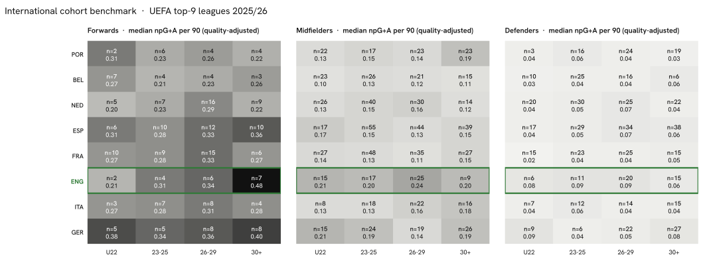

Summary · Question 3 of 14
Explore the data
Benchmark vs peer countries
Structural benchmark vs peer countries
The tables below count English players in the top-9 leagues by position group and age cohort against the peer countries, from the same season tables as every other count in the atlas.
Cohort gaps — forwards
| Cohort | U22 | 23-25 | 26-29 | 30+ |
|---|---|---|---|---|
| England | 2 | 4 | 6 | 7 |
| France | 10 | 9 | 15 | 6 |
| Germany | 5 | 5 | 8 | 8 |
| Spain | 6 | 10 | 12 | 10 |
| Italy | 3 | 7 | 8 | 4 |
Cohort gaps — midfielders
| Cohort | U22 | 23-25 | 26-29 | 30+ |
|---|---|---|---|---|
| England | 15 | 17 | 25 | 9 |
| France | 27 | 48 | 35 | 27 |
| Germany | 15 | 24 | 19 | 26 |
| Spain | 17 | 55 | 44 | 39 |
| Italy | 8 | 18 | 22 | 16 |
Cohort gaps — defenders
| Cohort | U22 | 23-25 | 26-29 | 30+ |
|---|---|---|---|---|
| England | 6 | 11 | 20 | 15 |
| France | 15 | 23 | 25 | 15 |
| Germany | 9 | 6 | 22 | 27 |
| Spain | 17 | 29 | 34 | 38 |
| Italy | 7 | 12 | 14 | 15 |
* Count and median npG+A per 90 of players with the country's nationality in a top-9 league, 2025/26, at least 450 minutes; cohort by age at the season's calendar turn (start year + 1 − birth year). 5 of the 8 countries are shown; the heatmap above carries all of them. Largest English shortfalls against the peer median count: midfielders 30+ (9 vs 23), defenders 23-25 (11 vs 23), midfielders 23-25 (17 vs 26).
The full picture, all nine peer countries at once, as a heatmap:

Observations
Per capita: rank 6 of 8 · The largest cohort gap: midfielders 30+ · Trajectories 2024/25 → 2025/26: mixed
Per capita: rank 6 of 8
208 English players on 2025/26 rosters of the nine strongest leagues give 3.60 per million inhabitants, rank 6 of 8. Portugal leads with 25.19, 7.0 times the English density; France sits one place above with 5.79 from 395 players and a population 1.2 times larger. Below England: Italy, Germany.
The largest cohort gap: midfielders 30+
Counting 2025/26 top-9 players by position group and age cohort and comparing the English count with the median of the other seven peers, the three largest shortfalls are midfielders 30+ — 9 English against a peer median of 23; defenders 23-25 — 11 English against a peer median of 23; midfielders 23-25 — 17 English against a peer median of 26. The cohort tables above show the medians behind the counts.
Trajectories 2024/25 → 2025/26: mixed
73 English-eligible players had at least 900 minutes in both 2024/25 and 2025/26: forwards 16 (3 up, 2 stable, 11 down); midfielders 28 (7 up, 9 stable, 12 down); defenders 29 (5 up, 20 stable, 4 down). A move counts as up or down when league-adjusted goals + assists per 90 changed by more than 0.05; 31 of 73 stayed within that band. These are season-over-season deltas, not projections.